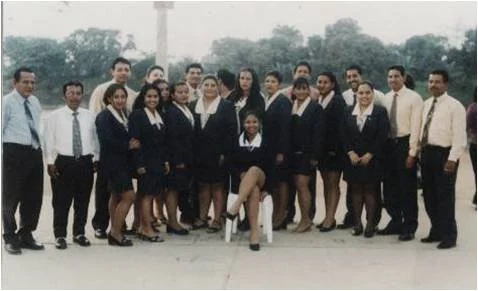

Formación integral, disciplina, conocimiento y valores para el futuro.

Ser una institución líder en el Cantón Daule, destacada por su excelencia académica, el respeto a los padres como formadores y la capacitación continua de sus docentes.
Brindar formación integral que permita a los estudiantes construir su proyecto de vida, fomentando conocimiento, pensamiento crítico, autoestima, solidaridad y responsabilidad.
El Colegio Particular Laico “Olmedo” nace el 26 de julio de 1996 como respuesta a la necesidad de contar con una institución educativa comprometida con la formación de jóvenes de bajos recursos en el cantón Daule.
Este proyecto fue impulsado por los profesores Tito León Naranjo, Rubén León Naranjo, Edgar Morán y Luis Moyano León, quienes visualizaron la creación de un centro educativo que aporte al desarrollo de la comunidad.
Con el liderazgo del Lcdo. José Tito León Navarrete, junto a sus hijos Tito y Rubén León, se emprendió el proceso de creación del colegio con esfuerzo, perseverancia y compromiso.
Tras cumplir con los requisitos exigidos por la Dirección Provincial de Educación del Guayas, el colegio obtiene su permiso oficial de funcionamiento el 23 de abril de 1997.
En abril de 1997 se matricula la primera estudiante, Mercedes Sánchez Méndez, y poco después se alcanza un total de 43 estudiantes, marcando un inicio exitoso.
Las clases comenzaron el 5 de mayo en jornada vespertina, con un equipo docente comprometido en brindar educación de calidad en áreas como matemáticas, lenguaje, ciencias, inglés e informática.
Con el paso de los años, la institución fue creciendo progresivamente, incorporando nuevos docentes y ampliando su oferta académica para responder a las necesidades educativas del entorno.
En el período 2004 - 2005, el Lcdo. Tito León Naranjo y el Lcdo. Rubén León Naranjo asumieron la dirección del plantel como rector y vicerrector respectivamente, fortaleciendo la organización institucional.
Actualmente, el colegio se ha consolidado como una institución técnica que ofrece bachillerato en comercio y administración, con especializaciones en:
Hoy, el Colegio Olmedo continúa formando jóvenes con valores, conocimientos y habilidades, contribuyendo al desarrollo del cantón Daule y del país.
Información histórica obtenida de: colegiolmedo97.blogspot.com